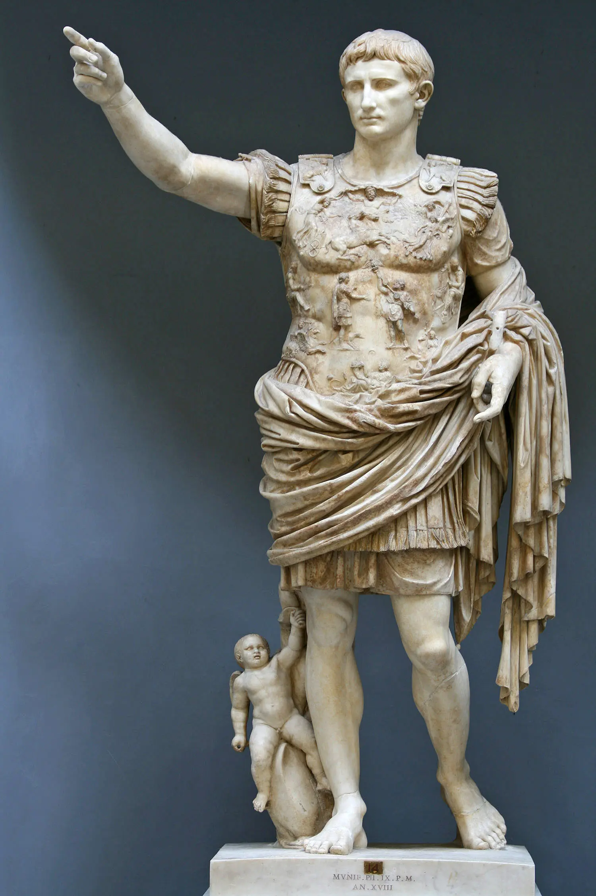
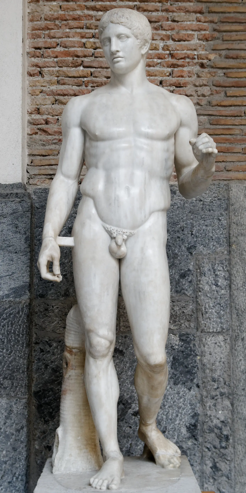
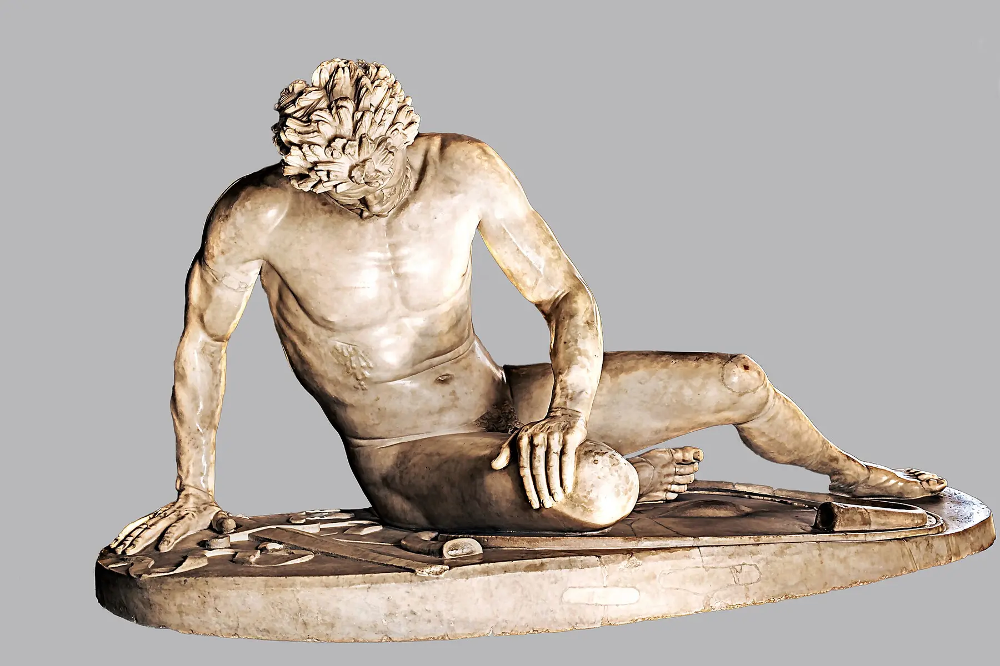
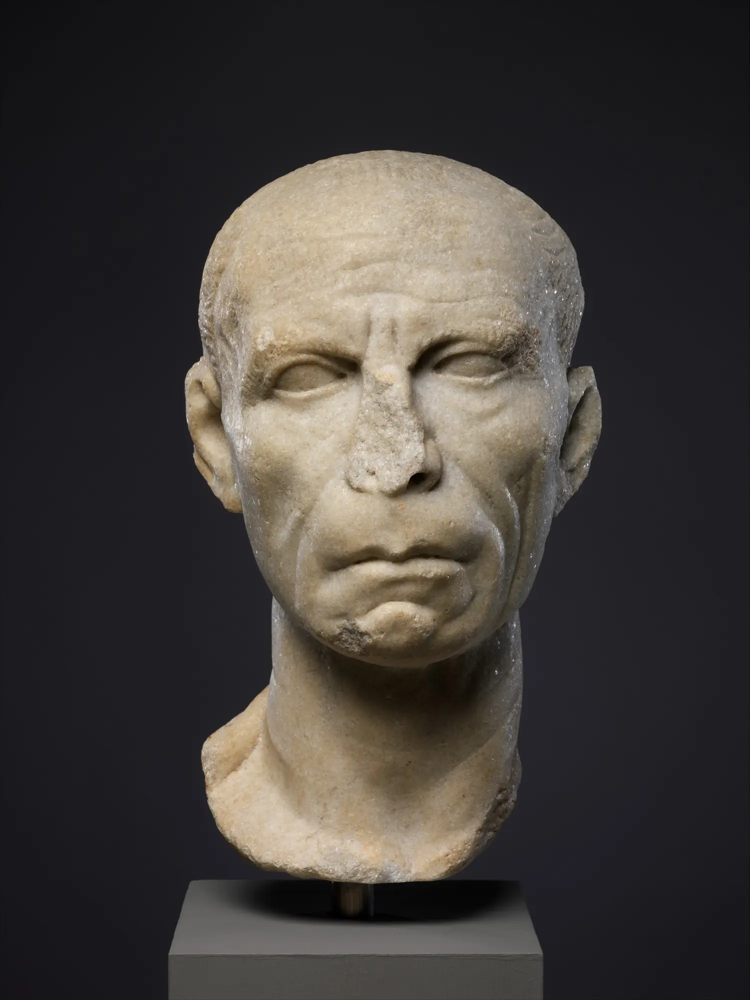
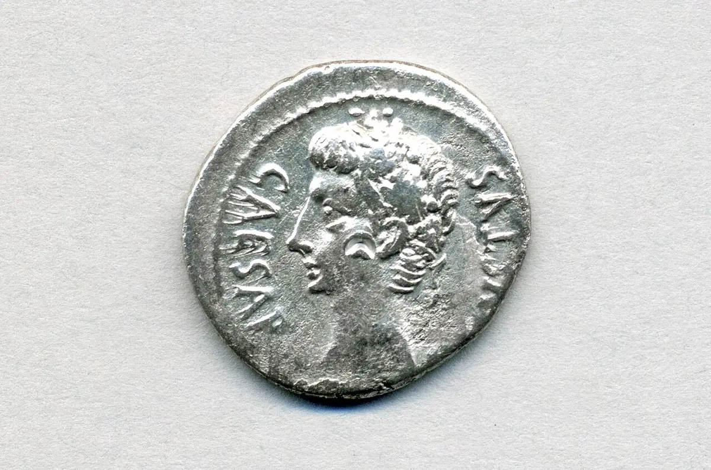
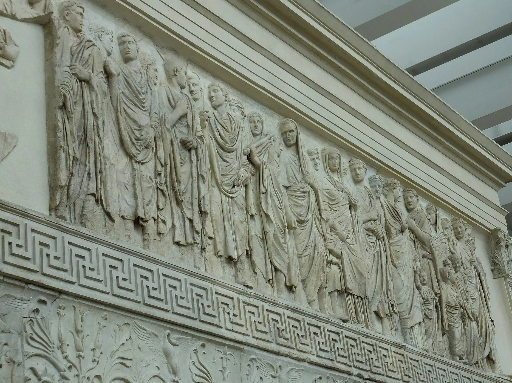
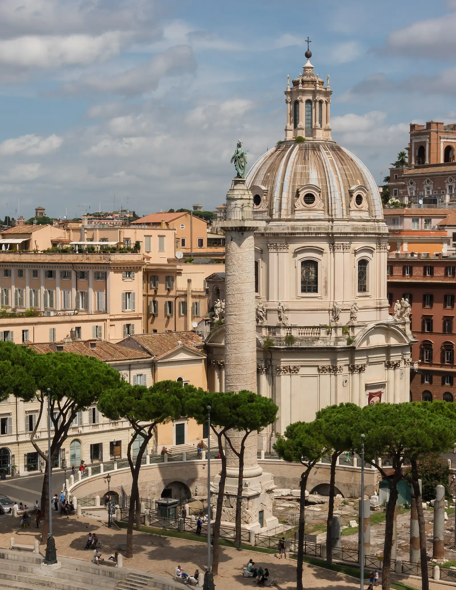
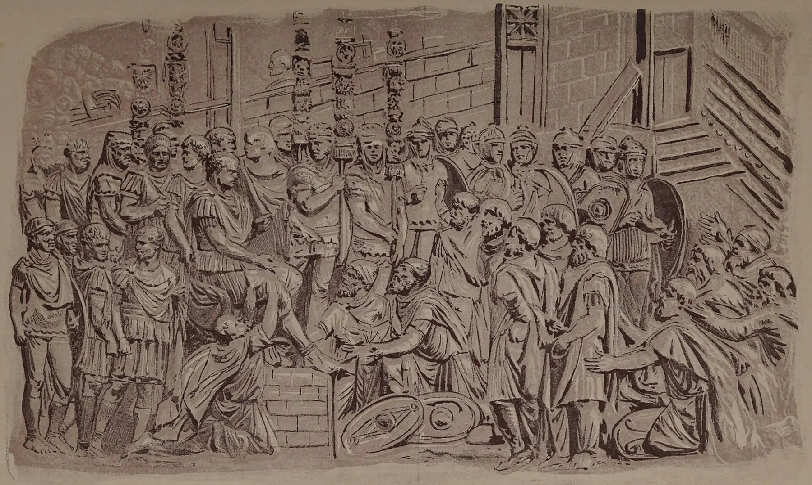

01 · Guarda prima di sapere
Una persona
o una presenza?
Niente nome, data o spiegazione. Prima che la storia identifichi questa figura, prova a capire quale rapporto vuole stabilire con chi la guarda.
Quanti anni sembra avere?Sta parlando, comandando o apparendo?Dove finisce l’uomo e comincia il simbolo?
Lascia entrare la storia
02
Dopo la misura greca
Dal modulo precedente
La forma resta.
Cambia ciò che deve fare.
Il Doriforo non riproduceva un individuo medio realmente esistente: organizzava il corpo mediante proporzione, ponderazione e rapporti fra tensione e riposo. Roma eredita questa possibilità, ma la colloca dentro una società nella quale il ritratto, la memoria familiare e il comando occupano lo spazio pubblico.
La posa greca non viene copiata come un oggetto inerte. Viene selezionata e tradotta: quando quel corpo indossa una corazza, solleva il braccio e appare nei luoghi dell’impero, l’equilibrio formale diventa una tecnologia della presenza politica.

proporzioneponderazionegiovinezza ideale→autorità riconoscibile

03 · Il mondo diventa più grande
Il corpo può mostrare
anche la sconfitta.
Dopo le conquiste di Alessandro, i regni ellenistici collegano territori vasti e città cosmopolite nelle quali circolano artisti, culti, testi, conoscenze e forme. L’Ellenismo non è la decadenza di una perfezione classica: amplia le possibilità del visibile, pur senza trasformare ogni opera in un’esplosione emotiva.
Nel cosiddetto Galata morente il pathos, cioè la capacità della forma di rendere percepibile una condizione intensa, convive con l’alterità costruita dal torques, dai capelli e dai baffi. Il vinto conserva forza e dignità, ma questa dignità accresce anche il valore della vittoria celebrata dal monumento pergameno.
Ciò che vediamo è una replica romana in marmo, databile circa al 60–40 a.C., derivata da un gruppo bronzeo ellenistico perduto dedicato da Attalo I dopo le vittorie sui Galati. La copia non è un vetro trasparente sull’originale: materia, sostegni, collocazione e pubblico sono cambiati.
- Opera
- Galata morente o Galata Capitolino
- Data
- Replica romana, c. 60–40 a.C.; modello ellenistico del III sec. a.C.
- Materia
- Marmo; modello perduto probabilmente in bronzo
- Provenienza
- Rinvenuto negli Horti Sallustiani, Roma
- Conservazione
- Musei Capitolini, Palazzo Nuovo, MC 747
- Stato
- Replica antica con restauri moderni
04
Un volto porta con sé gli antenati

Gens · memoria · rango
Le rughe non sono
una fotografia.
Nella società repubblicana la gens collega individui, discendenza, nome e memoria pubblica. Le famiglie aristocratiche costruiscono il proprio prestigio attraverso cariche, funerali, immagini degli antenati e racconti di servizio alla comunità. Il mos maiorum, l’insieme mobile dei costumi attribuiti agli antenati, fornisce un linguaggio di disciplina, gravità e continuità.
Il cosiddetto ritratto veristico accentua talvolta età, magrezza, tensione e irregolarità. Non registra neutralmente ogni dettaglio, né permette di dedurre il carattere psicologico del soggetto: seleziona tratti capaci di presentare esperienza e autorità come qualità visibili. Questo linguaggio non appartiene nello stesso modo a tutti i gruppi sociali e a tutte le epoche.
rughe → esperienzamagrezza → disciplinafrontalità → fermezzaLe frecce indicano associazioni culturali, non diagnosi della persona.
- Opera
- Ritratto in marmo di un uomo
- Data
- Fine I secolo a.C., tarda Repubblica o prima età augustea
- Materia
- Marmo
- Provenienza
- Non documentata
- Conservazione
- The Metropolitan Museum of Art, 21.88.14
- Stato
- Testa antica; naso danneggiato, superficie consunta
05
Dalla Repubblica al principato
Il re non deve
sembrare un re.
Conquiste, disuguaglianze, eserciti legati ai comandanti e guerre civili logorano le istituzioni repubblicane. Dopo la vittoria su Antonio e Cleopatra, Ottaviano concentra poteri eccezionali, ma nel 27 a.C. presenta il nuovo assetto come restituzione dell’ordine e riceve il titolo di Augusto.
Il principato conserva Senato, magistrature e lessico repubblicano, mentre il princeps controlla risorse, province strategiche ed eserciti. Anche l’immagine deve compiere questa difficile operazione: far apparire un’autorità superiore senza dichiarare semplicemente una monarchia.
Forme repubblicane
Augusto si presenta come primo fra i cittadini, restauratore di riti e istituzioni.
Poteri eccezionali
Il comando militare, le risorse e il prestigio dinastico producono una posizione senza equivalenti.
Un ordine naturale
Monumenti, rituali e ritratti fanno apparire stabile una soluzione nata dalla guerra civile.
06 · Un uomo che non invecchia
Smonta il volto
del potere.
L’opera iniziale è l’Augusto di Prima Porta, statua in marmo rinvenuta nella villa di Livia e datata con prudenza all’inizio del I secolo d.C. Attiva un livello alla volta: ogni segno segue la fotografia e mostra non soltanto che cosa vediamo, ma che cosa quell’elemento invita a credere.
La domanda che resta
Stiamo conoscendo Augusto oppure l’immagine che il suo potere vuole rendere pubblica?
Attiva i livelli
Attiva un livello per cominciare a scomporre l’immagine.
0 / 8 livelli osservati
Una naturalezza controllata
Il volto è riconoscibile, ma resta giovane anche quando l’età reale avanza; l’acconciatura stabilizza un tipo ritrattistico replicabile. Il gesto dell’adlocutio presenta il comandante che si rivolge alle truppe, mentre la corazza trasforma la restituzione delle insegne perdute contro i Parti in un ordine cosmico sostenuto da divinità e personificazioni.
Prudenza necessaria
La statua in marmo è collegata a un modello ufficiale e alla tradizione policletea; datazione, destinatari e rapporto con un eventuale prototipo bronzeo restano discussi. I piedi nudi, Cupido sul delfino e il richiamo a Venere concorrono alla dimensione eroica e dinastica, ma non equivalgono automaticamente a un’apoteosi, cioè al riconoscimento rituale del sovrano defunto come divino.
- Opera
- Augusto di Prima Porta, inv. 2290
- Data
- Inizio I secolo d.C.; tipo connesso agli eventi del 20 a.C.
- Materia
- Marmo, originariamente policromo
- Provenienza
- Villa di Livia, Prima Porta; rinvenuto nel 1863
- Conservazione
- Musei Vaticani, Braccio Nuovo
- Stato
- Statua antica con integrazioni; rapporto col prototipo discusso
07
Il volto si moltiplica
Statue · busti · monete · iscrizioni
Essere riconoscibile
senza essere presente.
Un impero esteso non può dipendere dalla presenza fisica del sovrano. Tipi ritrattistici, titoli, abiti e attributi rendono il principe identificabile; monete e oggetti ripetibili portano il suo profilo in gesti quotidiani. Un monumento onorario rende pubblica la dignità attribuita a qualcuno e la lega a uno spazio condiviso: la somiglianza fisiognomica è soltanto una parte del sistema.
Romamodelli, titoli, rituali
HispaniaAfricaGalliaGreciaAsiaEgitto

Reti e cittadinanza
Strade, porti, eserciti e città mettono in relazione comunità linguistiche e religiose differenti. La cittadinanza si amplia gradualmente, fino alla concessione molto estesa del 212 d.C., senza cancellare disuguaglianze di rango, genere e condizione.
Conquista e sfruttamento
La rete è sostenuta anche da guerra, tassazione, confische e lavoro servile. Parlare soltanto di infrastrutture e diritto trasformerebbe il punto di vista dei vincitori in una descrizione neutrale dell’impero.
Romanizzazione
Il termine va usato come problema, non come marcia uniforme verso Roma: descrive processi di negoziazione, appropriazione, resistenza e trasformazione reciproca, con esiti regionali molto diversi.

08 · La famiglia diventa Stato
Una successione
cammina nel rito.
L’Ara Pacis Augustae, votata nel 13 a.C. e consacrata nel 9 a.C., è insieme altare, recinto monumentale, programma civico, religioso e dinastico. Nei fregi processionali sacerdoti, magistrati, littori, uomini, donne e bambini non posano come una famiglia moderna: partecipano a un ordine rituale nel quale discendenza e futuro politico diventano visibili.
Le donne della casa imperiale non sono comparse decorative. Matrimonio, maternità, sacerdozio, lutto e continuità dinastica attribuiscono loro un ruolo pubblico, anche se il potere resta organizzato dentro una società patriarcale. Alcune identificazioni dei personaggi sono discusse: proprio questa incertezza impedisce di ridurre il fregio a una fotografia di gruppo.
rito+famiglia+successione+città=ordine visibile
- Opera
- Ara Pacis Augustae, fregio sud
- Data
- 13–9 a.C.
- Materia
- Marmo di Luna
- Contesto originario
- Campo Marzio settentrionale, Roma
- Conservazione
- Museo dell’Ara Pacis, Roma
- Stato
- Frammenti antichi ricomposti con integrazioni; allestimento moderno
09
Raccontare la conquista

Monumento · spazio · memoria
La guerra diventa
un racconto di pietra.
La Colonna Traiana non occupa soltanto il foro: organizza il tempo. Il suo rilievo storico — un racconto scolpito che seleziona e ordina azioni riconoscibili — segue a spirale episodi delle guerre daciche del 101–102 e 105–106 d.C., ripete l’imperatore e alterna marce, attraversamenti, costruzioni, discorsi, battaglie e sottomissioni, facendo dell’esercito una comunità ordinata attorno al comando.
La relativa dignità visiva concessa ad alcuni Daci non annulla la funzione celebrativa della loro sconfitta. Il monumento produce verosimiglianza, non una cronaca fotografica imparziale: rende la conquista leggibile dal punto di vista romano e tace gran parte dei costi imposti ai vinti.
Molte scene erano difficili da seguire dal basso; edifici vicini offrivano punti di vista parziali, ma nessuno spettatore antico poteva leggerle come oggi si scorre un’immagine srotolata. La visione dell’insieme, la ripetizione di Traiano e la scala del complesso agivano anche quando i dettagli sfuggivano.

AttraversareCostruireCombattereSottomettereRicordare
La sequenza trasforma operazioni differenti in un processo che appare necessario e concluso.
- Opera
- Colonna Traiana
- Data
- Dedicata nel 113 d.C.
- Materia
- Marmo di Luna, fusto composto da grandi rocchi
- Contesto originario
- Foro di Traiano, tra Basilica Ulpia e biblioteche
- Conservazione
- In situ, Roma; statua sommitale antica perduta
- Funzioni
- Onoraria, narrativa, topografica e funeraria

10 · Più grande di un corpo
La somiglianza
non basta più.
La statua seduta di Costantino, costruita con la tecnica acrolitica, doveva raggiungere circa dieci o dodici metri. Testa, mani e piedi erano in marmo; un’intelaiatura sosteneva le parti vestite, probabilmente rivestite con materiali preziosi. Nel grande spazio della Basilica di Massenzio, poi associata al vincitore, il corpo dell’imperatore diventava architettura.
Occhi ingranditi, frontalità, superfici semplificate e scala sovrumana non sono soltanto perdita dell’abilità naturalistica classica. Costruiscono una presenza distante, stabile e quasi sottratta al tempo. Il passaggio al cristianesimo non cancella immediatamente il linguaggio imperiale: lo trasforma e prepara altre immagini del sovrano, del santo e dell’autorità invisibile.
- Opera
- Colosso acrolitico di Costantino, testa MC 1072
- Data
- Inizio IV secolo d.C., con interventi e ridestinazioni discussi
- Materia
- Marmo pario per le parti nude; struttura e rivestimenti per il resto
- Provenienza
- Abside occidentale della Basilica di Massenzio, Roma
- Conservazione
- Musei Capitolini, cortile del Palazzo dei Conservatori
- Stato
- Nove grandi frammenti antichi; corpo originario perduto
11
Il volto dell’autorità sopravvive
Non la stessa immagine.
Lo stesso problema.
Tra Roma e il presente non corre una linea retta. Cambiano religioni, istituzioni, tecniche e pubblici; tuttavia alcune domande ritornano ogni volta che il potere deve farsi riconoscere, circolare e durare oltre il corpo di chi lo esercita.
- 01
Riconoscibilità
Corona, uniforme, colore, sfondo istituzionale o semplice acconciatura rendono leggibile il ruolo prima della persona.
- 02
Età controllata
Il volto ufficiale può trattenere giovinezza, esperienza o energia anche quando la biografia reale cambia.
- 03
Ripetizione
Monete, banconote, fotografie, manifesti, televisione e social moltiplicano una presenza, ma con velocità e logiche diverse.
- 04
Scala
Statue equestri, monumenti, schermi e primi piani alterano il rapporto fisico fra autorità e pubblico.
- 05
Selezione
Ogni ritratto ufficiale elimina casualità, sceglie un gesto e costruisce la distanza desiderata fra individuo e funzione.
Confronto interattivo
Vero, autorevole, divino
Scegli un volto, poi classifica l’elemento dominante. La risposta non assegna un’etichetta definitiva: spiega quale strategia prevale in quell’immagine.
Il tempo come autorità
Seleziona una categoria e osserva come un tratto visibile viene trasformato in un’affermazione pubblica.
12 · Guarda di nuovo
La stessa figura.
Un altro sguardo.
Adesso puoi vedere il richiamo al corpo greco, la giovinezza senza tempo, il tipo ritrattistico, il gesto pubblico, il racconto della corazza, la discendenza divina e la tensione fra persona reale e ruolo. Puoi anche chiederti chi commissiona, chi colloca, chi guarda e che cosa resta fuori dall’immagine.
Il tuo primo sguardo
Non hai ancora scritto nulla.
—
—
13 · Verifica e recupero
Hai imparato a vedere
la costruzione?
Dodici domande compaiono una alla volta. Se sbagli, ricevi una spiegazione collegata alla lezione e affronti una domanda diversa: la prosecuzione si sblocca soltanto quando il rapporto essenziale è stato ricostruito.
Domanda 1 di 12
La domanda resta aperta
Il ritratto mostra
chi governa o costruisce
il modo in cui deve essere visto?
Fa entrambe le cose, ma non nella stessa misura e mai in modo innocente. Un volto può conservare tracce di un individuo; quando entra in un sistema di tipi, gesti, attributi, rituali e monumenti, diventa anche una proposta di ordine rivolta a un pubblico.
Ricomincia dallo sguardo ↑Dato, interpretazione, credito
Fonti e immagini
Le schede distinguono ciò che è materialmente conservato dalle ricostruzioni e dalle interpretazioni. Le date controverse sono espresse con prudenza; per l’Ara Pacis si distingue il monumento antico dalla ricomposizione moderna.
Opere e ricerca
Musei Vaticani · Augusto di Prima Porta
Musei Capitolini · Galata Capitolino
The Met · Ritratto in marmo di un uomo, 21.88.14
Museo dell’Ara Pacis · Fregio sud
University of St Andrews · Trajan’s Column Project
Musei Capitolini · Testa del Colosso di Costantino
O. Hekster, Caesar Rules · Portraying the Roman Emperor
Cambridge University Press · Iniziative locali e statue imperiali
Crediti fotografici e licenze
Augusto di Prima Porta · Till Niermann · pubblico dominio
Galata morente · Rabax63 · CC BY-SA 4.0
Ritratto tardo-repubblicano · The Met Open Access · pubblico dominio
Ara Pacis · Amphipolis · CC BY-SA 2.0
Moneta di Augusto · James St. John · CC BY 2.0
Colonna Traiana · Jebulon · CC0
Dettaglio della Colonna · fotografia storica · pubblico dominio
Colosso di Costantino · fotografia in pubblico dominio
Il Doriforo è la stessa immagine documentata nel modulo 03: MANN, fotografia Carole Raddato, CC BY-SA 2.0.